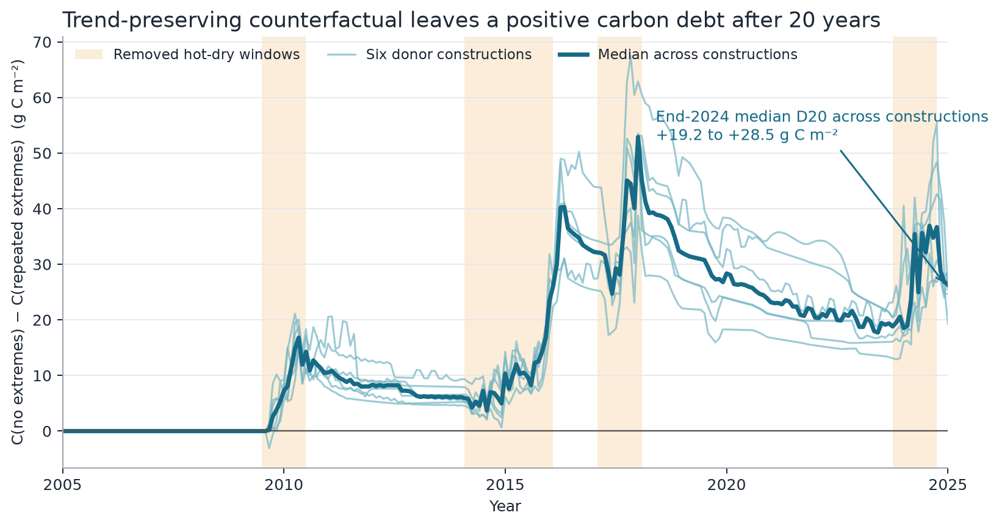
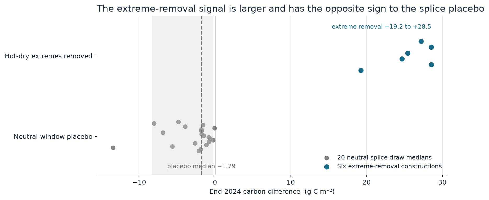
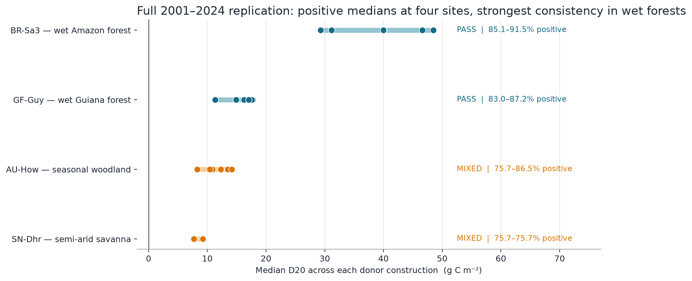
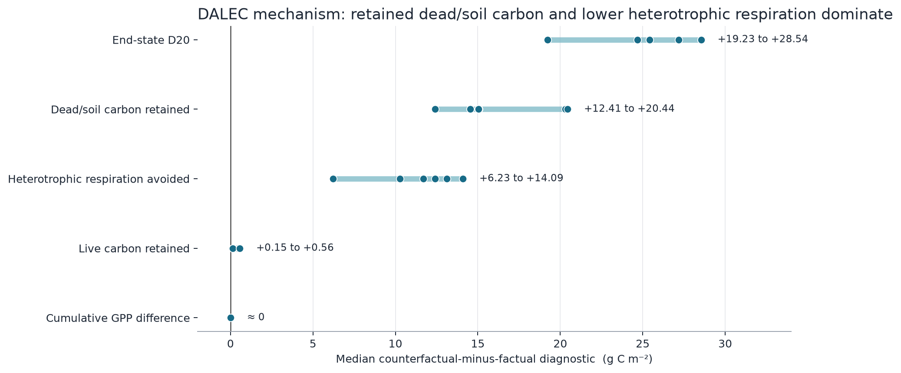

DALEC counterfactual experiment · meeting summary
The hidden carbon debt of repeated extremes
After 20 years, the trajectory with repeated climate extremes contains less ecosystem carbon than the matched trajectory without them.
The carbon gap remains after 20 years
Removing only the extreme anomalies—while retaining the background trend—leaves more carbon at the end of 2024.

The splice itself does not create the positive signal
Neutral splices are smaller and of the opposite sign. The placebo is not perfectly zero-centred, so it remains a caveat—not an explanation for D20.

Positive across four tropical locations
The direction is clearest in wet tropical forests; dry sites are positive but less consistent across parameter vectors.

The debt sits mainly in dead and soil carbon
In DALEC, the no-extremes trajectory avoids heterotrophic-respiration losses. The GPP difference is essentially zero.

Fluxes can look recovered while the ecosystem still carries a hidden carbon debt from repeated extremes.
Defensible now: a robust DALEC proof of concept. Next: forest-constrained inference and independent model or observational support.
Technical note and caveats
- Trend-preserving ERA5 counterfactual, 2001–2024; treatment period 2005–2024.
- Six anomaly-removal constructions and 44 common retained structural parameter vectors.
- This is model-structural evidence, not an observed Amazon-wide attribution or a calibrated posterior probability.
- Forest-constrained robustness is not yet established; the mechanism should not be generalized beyond DALEC.